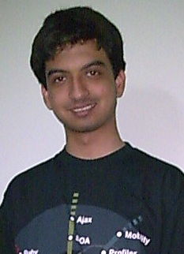

Varun Nischal - Mining the Blogosphere for Cool NetBeans Tutorials!
The NetBeans
Community Docs Program has acquired a new coordinator: Varun
Nischal! Learn more about him, how he contributes to the
NetBeans Community and why great blog entries about NetBeans make him
happy.
Welcome Varun! Please tell us a bit about
yourself.
I am a third-year Computer Science undergraduate student, studying at
the Jaypee Institute of Information Technology University, Noida,
India. I am also a Campus Sun Club
Coordinator. In that role, I organize various NetBeans-related
events to increase adoption of NetBeans in my university. I love coding
in C++ and Java and I am an open-source enthusiast with a passion for
NetBeans! Apart from programming, I enjoy sketching, computer gaming,
sports and biking.
How did you get started with the Community Docs
program and eventually become the program's new coordinator?
In August 2007, I took part in a Sun Microsystems contest for Indian
students called Code For
Freedom Contest. My entry into the competition was to write
documentation, and while working on this I met Amit Kumar Saha, then the
coordinator of the Community Docs program, and he became my guide.
Initially, my goal for writing was just to win, but along the way I
developed an interest in the Docs program as well. I got involved on
the mailing list, helped out with new contributors and of course,
submitted material of my own. Amit was hired by Sun and his coordinator
spot was open. James Branam
asked if I would be interested in helping to run the program and I
happily accepted his offer. (For the Code for Freedom contest, I was
acknowledged as a Significant
Contributor.)
As the Community Docs Coordinator, what will be your tasks?
Well, there are various tasks: Blogging about the latest happenings in
the program. Inviting bloggers to turn their fantastic entries about
NetBeans into tutorials, tips & tricks, or screencasts. Reviewing
contributions and tweaking them if needed for the program's format.
Spotlighting deserving contributors and promoting the program whenever
possible.
How many contributions have you made to the knowledge base? What
type of topics are you drawn to?
To date, six contributions. Four Tips
& Tricks, one article and a quick start guide.
Since joining the NetBeans Community and becoming an open-source
enthusiast, I have started to explore the technologies that I use, such
as
MySQL Server, SCM, Web 2.0 and many more. I try to gain a deeper
understanding of these technologies and in the process turn my
experiences and discoveries into documentation.
As a frequent contributor, you must have tips to share for others
about writing tutorials. What makes a good tutorial?
Since becoming a coordinator, I have already seen some amazing blog
entries that we have turned into tutorials for the Community Docs
program. What they have in common is ease of use even if the stated
technology in the tutorial is unfamiliar--you would
learn quickly and start to expand your
knowledge base confidently. But in general, a good tutorial is one that
emphasizes what its audience should learn
from the subject matter and how the topic could help them get started
with NetBeans comfortably. Recent examples are: Creating
EJB3 Sessions Beans Using Netbeans 6.1 and Glassfish by Jair Rillo Junior and Cloning
Using Mercurial In NetBeans 6.1 by Tushar Joshi.
Will you continue to contribute tutorials? What are you currently
working on?
As mentioned earlier, I contribute documentations based on my
exploration of technologies; since this is ongoing, naturally I will
continue to submit tutorials, especially for the Tips & Tricks
category. These days I am looking into MySQL using NetBeans 6.1 and
would love to produce docs related to it. But there are already two
very good examples out there: a tutorial and
an amazing screencast.
I will need to dig a bit deeper before I can come up with something
unique and useful beyond what is already available.
Are there projects that you have in mind for expanding the program?
There are two in progress. During the Code for Freedom Contest, I
started a Community Docs Mentoring
Program in which I gave sessions demonstrating the Wiki Wizard.
(The wizard is an applet that provides a rich-text editor, with
wiki-syntax highlighting features that make writing documentation
easy.) The program will resume again once university reopens. Second, I
am working on a plugin with Jay Mahadeokar, a
Community Docs contributor, that would enable NetBeans Wiki users to
work on their documentations off-line! Amit and I started the first
draft in January and then took a break from the project. Now, Jay and I
have resumed work on it and I will soon blog about our progress. For
those interested in the program's current and future projects, please
join our mailing list
and visit our blog to get updates.
Speaking of blogs, you write three! Please give brief descriptions
and tell us how you find time to manage all three.
Actually, I have four blogs. Three of them are technology or
NetBeans-related. The fourth one is about sports, which I love as well.
Developer's Kolektiv
- My first-ever blog and originally named prOgramming bOnds. It was a
collaborative blog comprising of five authors, where we wrote about any
technology (not necessarily NetBeans-related) that we explored.
NetBeans Guru – I created a
NetBeans specific blog where I could present my experience with the
NetBeans community, mailing lists and supported technologies. To “Learn
NetBeans, the NetBeans way”. For example, I have started a series in
which I will compare
the features of NetBeans IDE to Visual Studio .NET.
Another is a bi-weekly report of the ongoing NetBeans Quiz contest.
Also, through this blog I have worked on entries that have been turned
into Tips and Tricks documentation for the Community Docs program.
NetBeans Community
Docs Blog – A blog specifically for the Community Docs program and
which only members of the Community Docs Team can write for. We blog
about the latest we have from Community Docs program, to share with the
community. Everyone's invited to browse and leave comments and
suggestions.
ManUtd Back With A Bang
– I guess the blog tagline is enough to give an overview of this blog:
“Fans that have gone crazy to see Man United make a fabulous comeback
in English Football”. My friend and I blog here about events related
to Manchester United.
You also asked about time management. I'm often glued to my computer,
whether studying or blogging. Initially, it was tough but I gradually
worked on my time management skills. For example, I develop a raw idea
for a blog entry, save it as a draft and refine it in stages before
publishing. This way, I am able to devote other hours to my studies and
other activities.
Any closing thoughts?
Open source projects exists because of the kind of community support
they get. Some of that support comes in the form of users
documenting their experiences with that project, via blogs, articles or
reviews. I am happy to be a part of that process through the Community
Docs program.
Thank you Varun and good luck in your new role!
(June
2008)
More Links
NetBeans
Community Docs Program
NetBeans Community Docs Mailing List: dev at usersguide dot netbeans
dot org
How
to Write a Tutorial for NetBeans
Community
Docs Mentoring Program (JIIT University)